I implement the camera projection algorithm and the fundamental matrix estimation algorithm for this project. This project is easy to implement based on the structure from the lecture and the instuction. The results are relatively accurate and the implementation is listed below.
With 20 ground-truth of corresponding points in two images which are shot from different angles, we are able to estimate the camera's position and angle using least squares regression. This is easy to implement in matlab by simply solving a set of linear equations. To fix the scale to obtain the unique solution of the equations, I set the last element of the projection matrix to be 1. My total residual is 0.0445.
function M = calculate_projection_matrix( Points_2D, Points_3D )
Points_num = size(Points_2D,1);
A = []; M = zeros(11,1); B = [];
for n = 1:Points_num
x = Points_3D(n,1);
y = Points_3D(n,2);
z = Points_3D(n,3);
u = Points_2D(n,1);
v = Points_2D(n,2);
A(end+1,:) = [x y z 1 0 0 0 0 -u*x -u*y -u*z];
B(end+1,:) = u;
A(end+1,:) = [0 0 0 0 x y z 1 -v*x -v*y -v*z];
B(end+1,:) = v;
end
M = A\B;
M = [M;1];
M = reshape(M,[],3)';
end
To calculate the camera's position from the result we obtained from above, we can use the equation as instructed.
function [ Center ] = compute_camera_center( M )
Center = -M(:,1:3)\M(:,4);
end
| 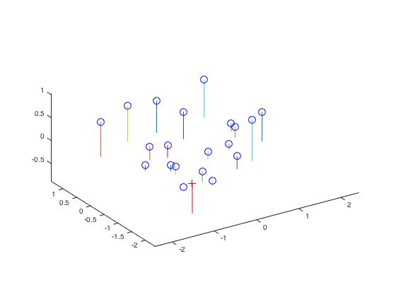 |
The fundamental matrix is estimated in the similar way with the camera projection estimation. The Matlab code is as below. Since the corresponding points are ground truths, the result is nearly perfect without any normalization techniques.
function [ F_matrix ] = estimate_fundamental_matrix(Points_a,Points_b)
Points_num = size(Points_a,1);
A = []; B = -ones(Points_num,1);
for n = 1:Points_num
u1 = Points_a(n,1);
v1 = Points_a(n,2);
u2 = Points_b(n,1);
v2 = Points_b(n,2);
A(end+1,:) = [u1*u2 v1*u2 u2 u1*v2 v1*v2 v2 u1 v1];
end
F_matrix = A\B;
F_matrix = [F_matrix;1];
F_matrix = reshape(F_matrix,[],3)';
[U,S,V] = svd(F_matrix);
S(3,3) = 0;
F_matrix = U*S*V';
end
| 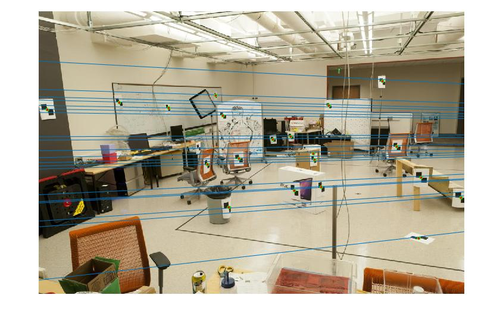 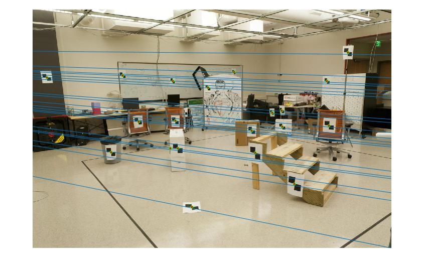 |
Given the unreliable corresponding pairs of points, which is the result calculated by VLFeat, the regression we use from above would not work properly due to the incorrect input. However, RANSAC algorithm is extremely suitable when there are outliers. Random subset of corresponding pairs would come up with the correct result when the number of trials is large. In this case, I iterate 5000 times the RANSAC algorithm to find the best model. In each iteration, I consider the points as inliers when their multiplication with the fundamental matrix is comparatively small. I use 0.05 as the threshold and it achieves good performance after several experiments.
function [ Best_Fmatrix, inliers_a, inliers_b] = ransac_fundamental_matrix(matches_a, matches_b)
matches_num = size(matches_a,1);
Best_count = 0;
for iter = 1:5000
sampled_idx = randsample(matches_num,8);
Fmatrix = estimate_fundamental_matrix(matches_a(sampled_idx,:), matches_b(sampled_idx,:));
in_a = []; in_b = [];
count = 0;
for n = 1:matches_num
error = [matches_a(n,:) 1]*Fmatrix'*[matches_b(n,:) 1]';
if abs(error) < 0.05
in_a(end+1,:) = matches_a(n,:);
in_b(end+1,:) = matches_b(n,:);
count = count + 1;
end
end
if count > Best_count
Best_count = count;
Best_Fmatrix = Fmatrix;
inliers_a = in_a;
inliers_b = in_b;
end
end
idx = randsample(size(inliers_a,1),30);
inliers_a = inliers_a(idx,:);
inliers_b = inliers_b(idx,:);
end
For the images of Mount Rushmore, this algorithm identifies 612 true corresponding pairs out of 824 pairs that VLFeat gives. From the visualization of 30 pairs among them, we can assume that the result is nearly perfectly accurate. This is the same with the images of Notre Dame.
| 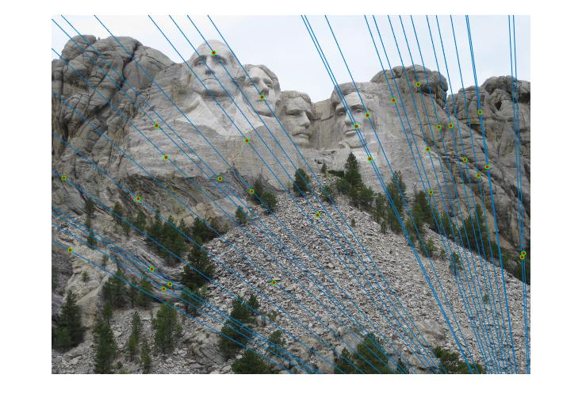 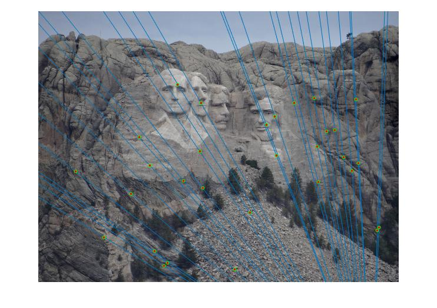 |
| 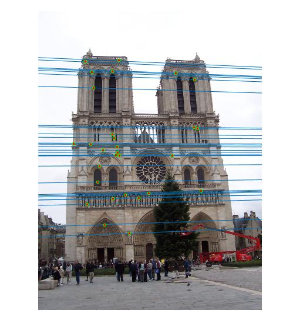 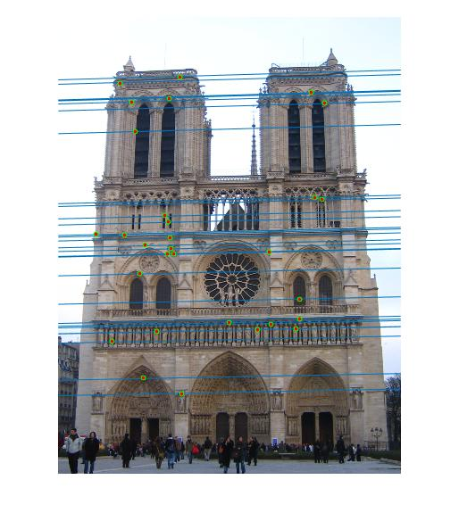 |
However, when we come to the Gaudi pair, good performance cannot be achieved by our algorithm above.
| 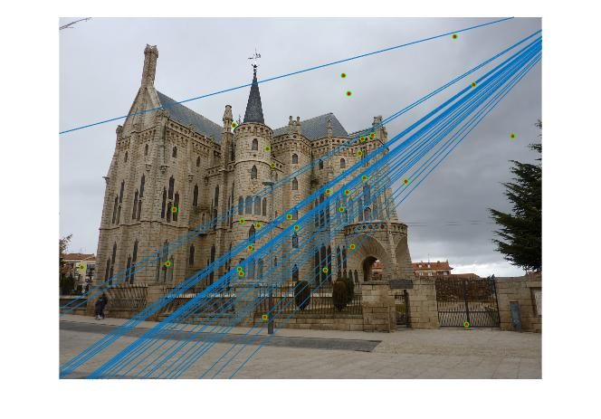 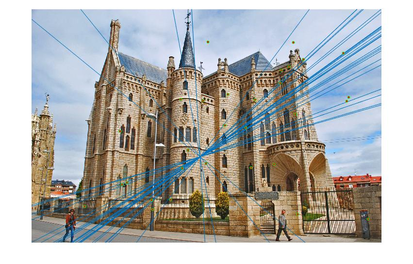 |
As instructed, I normalize the input points to improve the performance. After computing the mean coordinates, the scale is computed by letting the average squared distance from the origin to be 2.
cu_a = sum(Points_a(:,1))/Points_num;
cv_a = sum(Points_a(:,2))/Points_num;
s = Points_num/sum(((Points_a(:,1)-cu_a).^2 + (Points_a(:,2)-cv_a).^2).^(1/2));
T_a = [s 0 0; 0 s 0; 0 0 1]*[1 0 -cu_a; 0 1 -cv_a; 0 0 1];
Points_a = T_a*[Points_a ones(Points_num,1)]';
Points_a = Points_a';
cu_b = sum(Points_b(:,1))/Points_num;
cv_b = sum(Points_b(:,2))/Points_num;
s = Points_num/sum(((Points_b(:,1)-cu_b).^2 + (Points_b(:,2)-cv_b).^2).^(1/2));
T_b = [s 0 0; 0 s 0; 0 0 1]*[1 0 -cu_b; 0 1 -cv_b; 0 0 1];
Points_b = T_b*[Points_b ones(Points_num,1)]';
Points_b = Points_b';
...
F_matrix = T_a'*F_matrix*T_b;
F_matrix = F_matrix';
...
This maneuver achieves the desired result as below. Although there exists a few misclassified pairs, the accuracy has been enhanced by normalization.
| 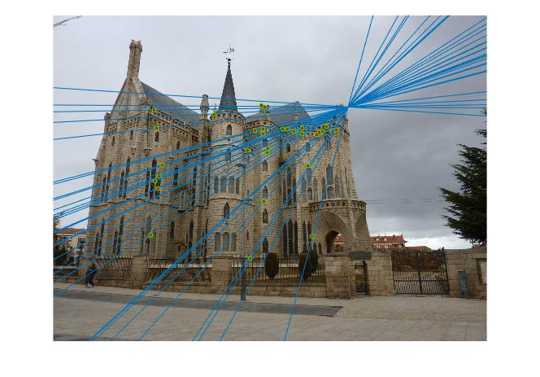 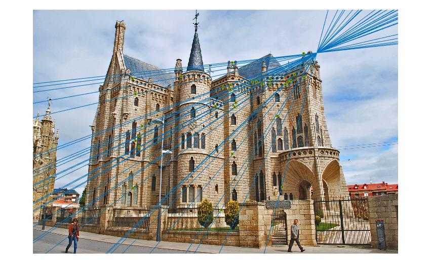 |